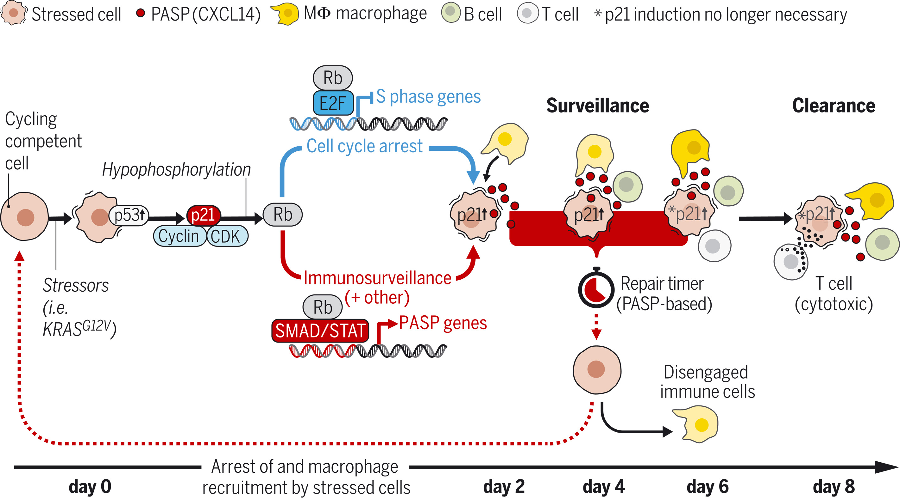

p21 produces a bioactive secretome that places stressed cells under immunosurveillance

p21 places stressed cells under immunosurveillance. p21 induced by cells under duress activates an
Rb-dependent transcriptional program that produces CXCL14 and other secreted factors. CXCL14 promptly
recruits macrophages, which disengage if stressed cells recuperate and normalize p21 within 4 days.
However, if p21 induction persists, the adjoined macrophages polarize toward an M1 phenotype and cytotoxic
T cells arrive to eliminate target cells, including preneoplastic cells.
Ines Sturmlechner, Cheng Zhang, Chance C. Sine, Erik-Jan van Deursen, Karthik B. Jeganathan,
Naomi Hamada, Jan Grasic, David Friedman, Jeremy T. Stutchman, Ismail Can, Masakazu Hamada,
Do Young Lim, Jeong-Heon Lee, Tamas Ordog, Remi-Martin Laberge, Virginia Shapiro,
Darren J. Baker, Hu Li, Jan M. van Deursen
INTRODUCTION:
Complex multicellular organisms are subject to a myriad of cellular stresses, which can be managed through cell-intrinsic adaptation and repair mechanisms. Cells that fail to recover activate programs that lead to regulated cell death or cellular senescence, thereby limiting the risk of neoplastic transformation. Evidence is emerging that intercellular communication also plays an important role in dealing with cellular stresses. For instance, cells experiencing DNA damage display cell-surface ligands that facilitate lymphocyte recognition and secrete cytokines that attract myeloid cells. Furthermore, cells undergoing cellular senescence generate a bioactive secretome known as the senescence-associated secretory phenotype (SASP), which facilitates senescent cell (SNC) recognition by the immune system.
RATIONALE:
Stressed cells that become senescent have been implicated in various biological processes beyond cancer, including development, tissue repair, aging, and age-related diseases, presumably through the paracrine actions of the SASP. To better understand the molecular properties of SNCs, we sought to identify key determinants of SNC identity by screening for genes nearby senescence-associated super-enhancers conserved across stressors, cell types, and mammalian species. Through this approach, we identified p21 (Cdkn1a), which encodes the cyclin-dependent kinase (CDK) inhibitor p21, and conducted an in-depth analysis of its functions from the time cells first experience stress until they have become senescent.
RESULTS:
We found that p21—in addition to its function in maintaining the cell-cycle arrest of SNCs—has a prominent role in establishing the SASP through retinoblastoma protein (Rb)–dependent transcription involving select SMAD and STAT transcription factors. Although this transcriptional program remains active in SNCs, p21 initiates this program as a first response to stress occurring in parallel with cell-cycle arrest. The resulting immediate-early secretome, which we term the p21-activated secretory phenotype (PASP), comprises several hundred factors, including the chemokine CXCL14, which recruits macrophages to surveil stressed cells with elevated p21. In mouse liver, these macrophages disengage if cells normalize p21 levels within 4 days after its induction. However, if p21 remains elevated, the adjoined macrophages polarize toward an M1 phenotype, and cytotoxic T lymphocytes arrive to execute target cell elimination when classical markers of senescence are not yet detectable. This scenario also occurs with oncogenic KRAS-mediated p21 induction, highlighting the physiological relevance of the uncovered immunosurveillance mechanism to tumor suppression. By contrast, CDK inhibitor p16, which is often elevated in SNCs and also halts cell-cycle progression through Rb hypo-phosphorylation, does not induce immunosurveillance when overexpressed in mouse liver. Although p16 induction yields an immediate-early secretome that consists largely of factors that overlap with the PASP, there are far fewer factors, and CXCL14 is absent. Studies on CDK inhibitor p27 further suggested that coordinated induction of cell-cycle arrest and immunosurveillance is a distinctive feature of p21.
CONCLUSION:
Our study demonstrates that in response to cellular stress, p21 alters the transcription regulatory properties of Rb to not only inhibit genes required for cell-cycle progression but also activate a large collection of genes implicated in diverse biological functions, including immunosurveillance. By promptly recruiting macrophages to stressed cells, p21 sets a biological timer that allows for a period in which stressed cells can recuperate, thereby normalizing p21. This timer expires when the immune response transitions from a surveillance to a clearance mode. As such, p21 provides a first line of defense against dysfunctional cells that can become cancerous or otherwise cause pathology. Given that p21 is a p53 target gene, it will be important to define whether this p21-controlled immunoclearance mechanism is perturbed in cancer cells that lack functional p53, and if so, to explore the therapeutic impact of interventions that reactivate it.